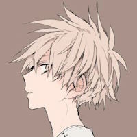
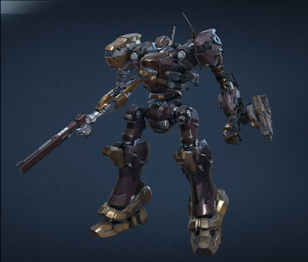
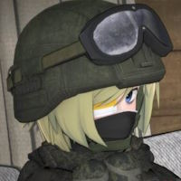
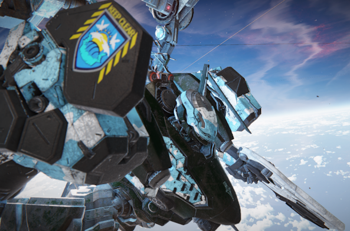
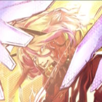
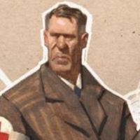
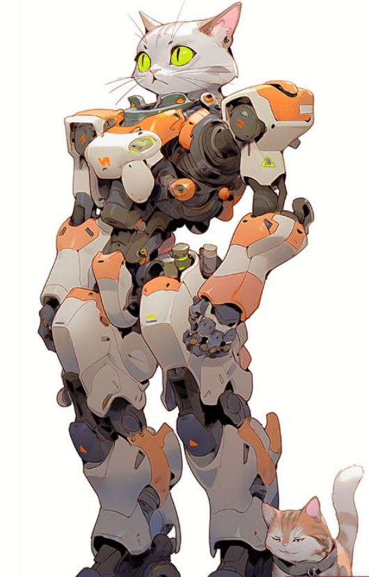
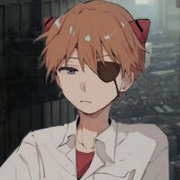
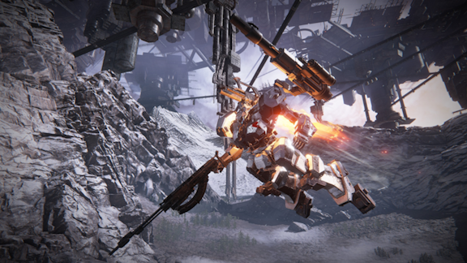

FALLSTAR
 PILOT NAME KYR ZEPHSTELLA AGE HAIR EYE 19 PINK BLONDE OCHRE -LICENCES- -BACKGROUND- EVEREST OUTLAWDOCUMENTATION
FALLSTAR was discovered amongst a group of survivors from a Diasporan planet no longer charted on the star map. A mining planet that erupted into war, and was soon destroyed for its resources. He was 12 at the age of his recovery. He was taken in by Albatross defectors, and learned to pilot and battle with a mech without a license. During his youth, he made his name raiding freights and plundering planets for resources. Eventually, the group of outlaws disbanded, and FALLSTAR was left homeless and directionless. Soon, he found his way to enrolling into the Union Navy. Under a fake identity registered in a core world, FALLSTAR made his way into pilot school and quickly astonished his instructors with his intuition and natural skill. He became renowned for his agility and technical prowess at flying a mech at high speeds, and blazed his path to the top of his class. Naturally, he became a licensed pilot with flying colors.FALLSTAR re-registered with Albatross, using his old connections to slip his way into the ranks. Taking on difficult and dangerous missions almost daily, FALLSTAR earned the title of ‘Lancer’ for being cunning, ruthless, and blindingly fast.Specializing in close quarter combat, he uses his blade and aerodynamically modified mech, SPARROW, to swim through the battlefield swiftly and with ease. He has a natural battle instinct and a focused, thorough fighting style.In-person, he is alert and aware, constantly on guard. He says little but means much, and is always the first person to tell the truth. He can be cold, but always gets straight to the point. Sometimes aloof, seemingly lost in thought.To this day, FALLSTAR’s true identity is unknown, and his intentions unclear.
GMS Everest "SPARROW"
GRIFFIN
 PILOT NAME DELTA LACHANCE AGE HAIR EYE 49 BLONDE BLUE -LICENCES- -BACKGROUND- EVEREST MERCENARYDOCUMENTATION
Delta Lachance was born on the Core World, Cradle, a planet rich in resources and advancements, yet haunted by its own scars. The Chernobyl incident, a disaster that made a region of the world uninhabitable for centuries. Tales circulated for decades of strange phenomena that followed the catastrophe, phenomena that seemed to blur the lines between science and something far stranger, even magical. As a child, Delta was entranced by these stories, feeling an almost magnetic pull to unravel their truth. Their thirst for knowledge was insatiable, and these bizarre accounts of mutated wildlife, paranormal events, and inexplicable technologies spurred an obsession to learn more.Though Delta had every luxury a child of Cradle could desire - access to the best schools, mentors, and libraries - they never felt fully at home in the structured, sterile world of the Core. While their peers gravitated toward secure careers and traditional paths, Delta dreamt of exploration, danger, and uncovering the untold secrets of the universe. They grew up reading every story, watching every video, and researching every obscure scientific paper about the Exclusion Zone.On the verge of adulthood, Delta became determined to discover whether the rumors about the Exclusion Zone were true or mere fiction. They secured a place with a group of researchers who had been granted access to an expedition into the Zone, where the possibility of lingering anomalies may be found. However, Delta's excitement quickly turned to frustration. The moment the expedition arrived at the designated coordinates, Union officials barred their way—deeming the site "off-limits" for further civilian exploration. Delta was angry, but also intrigued. Why the sudden closure? What were they hiding? The researchers reluctantly complied and turned back, their mission effectively a failure.But for Delta, this setback only fueled their obsession. If Union officials were so intent on preventing anyone from investigating these anomalies, then there was something worth discovering. They couldn't stay on Cradle, where the weight of Union's control stifled any further investigation. So, Delta made a decision: if they couldn’t investigate the Zone on Cradle, they would seek out similar phenomena on the Diasporan planets, far beyond the reach of Core governments.Delta convinced the researchers to alter their mission parameters. They would now focus on "anomalous" phenomena on other planets, venturing out into the unexplored wilds of the Colonies and beyond. The researchers were hesitant, but Delta's enthusiasm and knowledge of the subject were persuasive. And so, the group left Cradle, their ship making the long journey into the unknown territories of the frontier.For the first time in their life, Delta found themselves far from the comforts of the Core Worlds. As the months passed and the crew traveled between systems, Delta quickly realized that their naive academic background wasn’t enough to survive in the dangerous, unpredictable environments of the outer colonies. So, they began training themselves in the practical skills needed for self-preservation. They learned how to handle firearms, survival techniques, and basic combat training - skills that they never thought they'd need but quickly found essential. The more they learned about the dangers of the frontier, the more they understood that the scientific expeditions they were so eager to join were constantly under threat from hostile forces, such as raiders, pirates, even local militias who may see the group as a threat.The expedition was only the beginning. After a particularly close call with a pirate ambush in a remote system, Delta realized that they couldn’t rely solely on others to protect them. If they wanted to survive - and if they wanted to get closer to the truth of what was happening in the outer colonies - they needed to take control of their own fate. That was when they first encountered a mercenary unit who had been hired to provide security for the expedition. The mercenaries were seasoned, ruthless, and adept in combat, and it didn’t take long for Delta to realize that they could learn from them.What started as a simple interest in academic discovery turned into a deep, personal drive to understand the unknown, and soon it became clear that to truly explore the anomalies that they sought, they would need to become more than just a researcher. Delta needed to become a fighter. After all, no one would be handing out scientific discovery on a silver platter.Delta’s desire for knowledge fueled their resolve as they trained themselves for combat. Eventually, the group had enough to afford a GMS Everest mech, and elected Delta to be its pilot. After giving it some thought, the young newly-appointed pilot decided to designate the mech as CLEAR SKY, not only as a reflection of the group's mission to uncover the truths obscured by the Exclusion Zone, but also as a representation of their own desire for clarity.During a mission to investigate a mysterious anomaly on a fringe planet, Delta's expedition was ambushed by hostile mercenaries hired by an unknown faction. Delta’s group, although somewhat trained in combat, were quickly overwhelmed by the ambushing mercs. Piloting the newly acquired CLEAR SKY, Delta was forced to prioritize survival over exploration, leading the retreat of the remaining crew. The battle left a lasting mark on Delta, shifting their focus from discovery to staying alive, and solidifying their role as a capable fighter. The aftermath of the battle revealed the harsh reality of the frontier: the search for knowledge often required more than intellectual curiosity - it demanded strength, survival skills, and the ability to make tough decisions under fire.Delta’s decision to protect the expedition’s survivors rather than push forward with the original mission marked a decisive break from their academic past. Delta had decided to give themselves the callsign GRIFFIN, reflecting this shift, symbolizing their new dual role as both a scholar and a soldier, someone who could navigate and survive the dangerous and unpredictable universe. No longer just an explorer, Delta became a fighter, with CLEAR SKY as both a tool for survival and a symbol of their evolution into a pilot who would stop at nothing to uncover the truth - no matter the cost.Due to the injuries suffered to Delta’s team, they decided to disband and Delta would continue to pursue their goal as an independent mercenary, taking on contracts with a particular interest in planetary anomalies and strange occurrences. Whether it’s a distress signal from a remote colony, rumors of an ancient alien artifact, or reports of irregular environmental phenomena, Delta is always chasing the next clue to unraveling the mystery of the universe. Their growing reputation as a skilled pilot and investigator has earned them both respect and fear among their peers. However, their ultimate goal remains unchanged: to find the truth behind the phenomena that were first sparked in the Exclusion Zone of Cradle and, perhaps, unlock the secrets of the universe that no one else dares to uncover.
GMS Everest "Clear Sky"
RIOT DESTRUDO
 PILOT NAME LYONEL KARLHEINZ AGE HAIR EYE 30 RED-WHITE GOLD -LICENCES- -BACKGROUND- EVEREST NOBLEDOCUMENTATION
Destined for greatness as the firstborn of the Karlheinz family, Lyonel lived in the vicarious pleasure of his wealthy family. His life being devoted to studying nobility and rulership; his existence hidden from the general public. As the Karlheinz kingdom faced political strife, rebels invaded Lyonel's quarters and stole him from his family. In order to betray his lineage, Lyonel was injected with infectious blood, tainting his noble blood and giving him powers beyond his control. After learning about his families arbitrary rule over their kingdom, Lyonel continues living his divergent life traveling the galaxy and searching for a purpose.
GMS Everest "BAYONEX"

SICUREZZA
 PILOT NAME GIOVANNI ROMANO AGE HAIR EYE 30 BROWN BROWN -LICENCES- -BACKGROUND- CHOMOLUNGMA MEDICDOCUMENTATION
Giovanni 'Gio' Romano was born within the diaspera worlds and born to an impoverished family that modified and operated on a variety of mechs in order to make their living. In his youth, Gio' spent much of his younger days alongside a small feline companion which he referred to as Mittens. This petite partner of his spent several years by his side, inspiring him to make small machinations based upon the small feline's stature. With these creations, he spread joy from a young age to his peers, gifting the children of his neighborhoods and towns small mechanical toys. However, due to the progressively mounting conflicts within his world of individuals vying for resources and the basic standard of living growing more and more dubious, Giovanni was urged by his family to learn of medical craft and pursue a doctoral degree.Unfortunately, due to the poverty which pervaded his world, he was unable, having to settle with schooling to that of a combat medic's knowledge as well as an extraordinarily questionable doctoral license. After he obtained his education, he returned to his home to live beside his family once more in his mid 30s, working as a doctor for his community.Eventually, his work as a doctor had not been enough, and he found that his talents as a medical professional were required by the Union due to casualties which, akin to his own home, became far too grand to ignore. Thus, after some time of pilot-training, Gio had become a Lancer. Although, unlike his fellow men, known for their ruthlessness in battle, and their unbreakable wills, he was a man of kindness and compassion, yet few words due to his limited education.His mech, M1TT-3N5 came to symbolize his kindness, as he worked to maintain the mechs of his fellow pilots and care for the sick and injured on the battlefield. Thus, he became renown for his medical expertise and tech savviness, as well as his general ability to resolve his own conflicts barring the use of violence.
GMS Everest "M1TT-3N5"
TANGO ECHO 04
 PILOT NAME TANAKA KITSURAGI AGE HAIR EYE 18 RED GREY -LICENCES- -BACKGROUND- EVEREST CORPRO CHILD SOLDIERDOCUMENTATION
He was only 14 when he first sat in the pilot seat. With four other children without pasts or futures, he lies in a bunk, waiting for the next fight tomorrow will bring. He is a soldier.Smith-Shimano Corpro does not sell people, but potential, and he was just that - potential potential. SSC’s power comes from the cultivation of the best fit, healthy genetic material for colonial, medical, and military applications, and private use. He, alongside four other kids, were grown from the genetic data gained from over a hundred years of superior genetic cultivation. He spent the first 14 years of his life in hospitals and orphanages along the Sierra Madre Line under the watchful eye of SSC. He spent the next 3 fighting the battles SSC didn’t want to be seen fighting.The program, and by extension the squad, was called “Tiny Evil.” 5 children, born from the DNA of different people from across time, purely to fight. Maybe their “parent” was still out there. It didn’t matter. They didn’t even know. All they knew was war and each other. It was all they had. Ever since they were children, their bodies were marked with implants that would help with interface in their future mechs. On a Diasporan planet far from Cradle, in a derelict complex abandoned during a war from long ago, they lived, mined, trained, loved, cried. Unless the old computer in the dark room at the west wing of the complex woke up, that’s when things changed. That’s when the adults told them to stop mining. That’s when they would lose their names; when Tanaka Kitsuragi became Tiny Evil 04. When the computer would speak to them and they had to go into the giant robots and fight.War became routine. Things were simple. The kids lived every day as their last because it was. Knowing when they were gonna die brought them that peace. They played to their fullest because they knew they couldn’t tomorrow. The food they tasted was the tastiest because they might not be able to taste it tomorrow. They loved each other so so much because they knew they couldn’t tomorrow. Until 02 died. Then the delusion began to crack. They tried, they really did, to keep living. But it wasn’t the same with just the four of them. Counting the five children and all the adults, the complex was not a big place; now with only four of them, it was just big enough for 02 to be everywhere.She was in her bunk at every time of the day, the top one in the left-back corner of the room. She was in her seat at the lunch table. The space between 04 and 01, across from 05. She was playing in the courtyard, along with the others. Except she wasn’t. So 05 ran. They found his body a week later, half of it, anyway. It was after 03 died (friendly fire) when the computer stopped waking up. It stopped talking. 01 was the first to notice this. It had been a whole week and a half since the computer had spoken. Smith-Shimano stopped caring. After 14 years of monitoring their every step, then another 3 of forcing their every step, SSC stopped. The test was a failure. It only took their whole lives and their friends to be free. They did not know this. All they knew was that the computer was not and probably will not wake up for a while. It was the perfect time to get away from it all. To leave it all behind.Except that’s not right. They can’t just turn their backs on it all. This is where they lived and this is where they died. This is where they were born, in the womb of the mech and it is in that metallic coffin they died. It was their blood they spilled. So 01 and 04 made a promise: to pilot the mechs that born and killed them one last time and raze the aerie to cinders. And so they did. And after that promise, another: “If we truly want to leave it all behind, then that means each other, too.” And so they did.And so Tiny Evil 04, now Tanaka Kitsuragi, wandered the planet for purpose. Before, he had no family, no past, no future. Now, he’s lost his family and burned the past, but he has a future. But Kitsuragi was born in the womb of war, his body cultivated and marked for it. The fires of war left nothing; it burned everything he knew and loved. But ash needs flame to be alive, and so he entered Union to sit in the pilot seat once again, breaking his first promise and living every day hoping he doesn’t break the other.
GMS Everest "Good End"
*Named thus in a childish hope he alongside anyone else on the battlefield can meet "the Good Ending."
